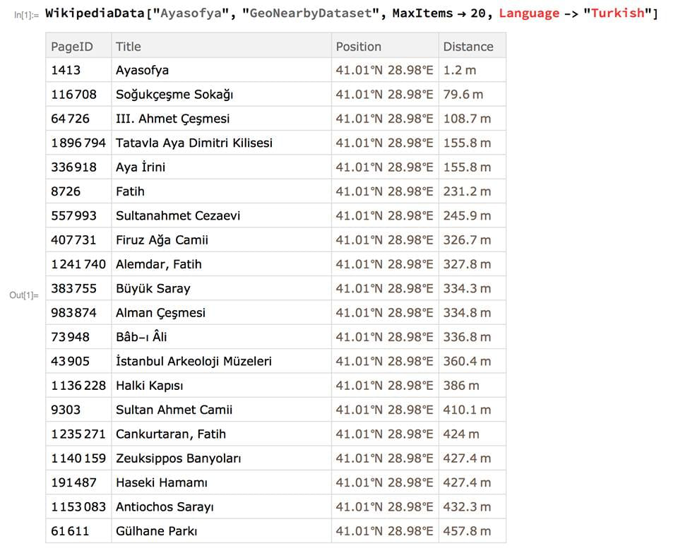

Aşağıdaki tek satırlık komut ile Mathematica sırayla şu işlemleri yapıyor:
Ayasofya’yı ve 20’yi ben seçtim, başka seçenekler de mümkün elbette Eğer dünya üzerinde bir yere gezmeye gidiyorsanız ve Mathematica biliyorsanız, gittiğiniz yerde nerelere de uğrayabileceğinizi bu tek satırlık kodla öğrenebilirsiniz
Türkiye’de çalışmayabilir, malum Vikipedi’ye giremiyoruz Fakat bu tatlı
örnekle asıl göstermeye çalıştığım programlama bilmenin ne kadar zevkli
bir şey olabileceği.
